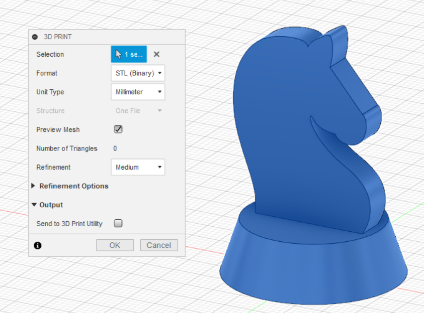
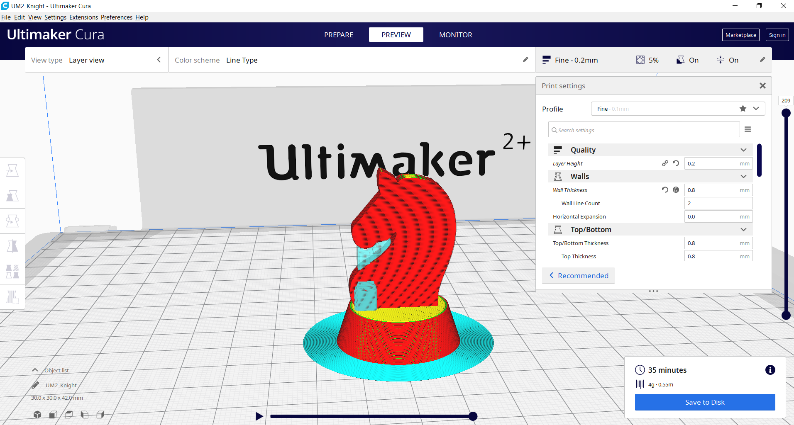
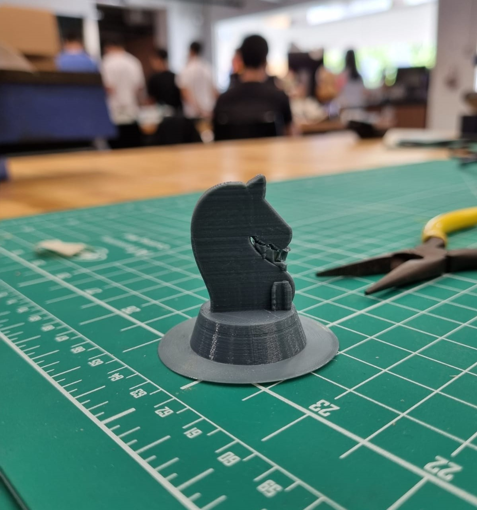
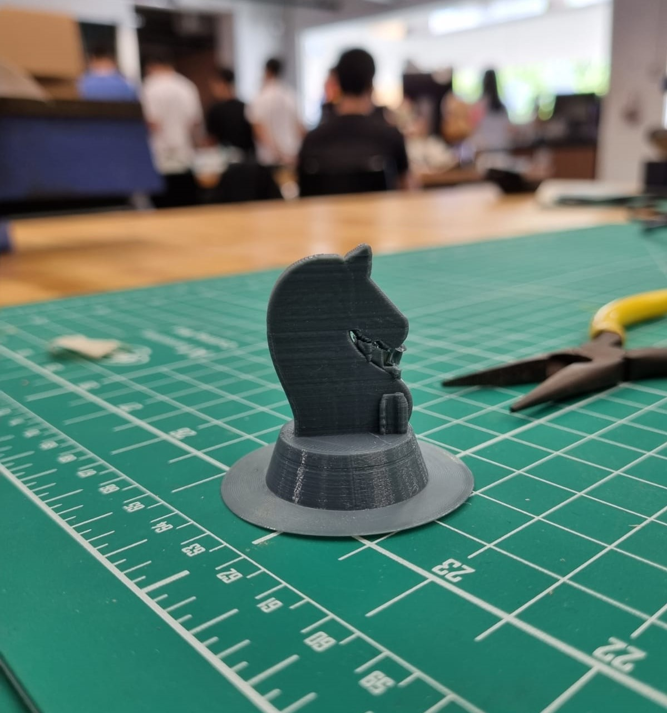

On this page I will be sharing my the process of 3D printing a Knight Chess Piece. I will take you from step 1 of drafting the piece on Fusion 360 to printing the piece out on the Ultimaker 2+.
First off, I drafted a knight piece on Fusion 360.I used the canvas funtion to copy a vector drawing of a knight and pasted it in the fusion software. From there I extruded the piece and thus my completed draft!
Secondly, I exported the piece by the make function on Fusion and exported the piece as a STL (Standard Tessellation Language) file. From there tranferred the file over to Cura, a program that converts digital 3D models into printing instructions for 3D printers. This intructions come in the form of g-code which the 3D printers are able to recongnise the required instrutions and perform the printing. Below are pictures of the 3D fuction on Fusion 360 and the Cura software in action!
 The settings in Cura are as follows:
Finally, the knight piece is printed in the 3D printer! The 3D printer that is used is the Ultimaker 2+. As you can see supports are printed as well! This is to ensure that the piece is stable during and after printing. Additionally this ensures that there is smooth and accurate printing.
 

Click here to return back to projects!!